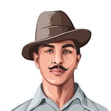

Shaheed Bhagat Singh
-----The Great Freedom Fighter-----

Bhagat Singh
The Man Should Either Begin To
Think Himself A Rival Of God Or He
Begin To Believe Himself To Be God
-Bhagat Singh
Who was Bhagat Singh?
Bhagat Singh was a hero of the early 20th-century Indian independence movement. He was a vocal critic of British rule in India and was involved in two high-profile attacks on British authorities—one on a local police chief and the other on the Central Legislative Assembly in Delhi. He was executed for his crimes in 1931 at the age of 23.
Why is Bhagat Singh Important?
Bhagat Singh was involved in two high-profile plots against British authorities in India that helped galvanize the Indian independence movement. In 1928 he took part in a plot to kill the police chief responsible for the death of influential Indian writer and politician Lala Lajpat Rai. In 1929, protesting against the Defence of India Act, he and an accomplice threw a bomb at the Central Legislative Assembly in Delhi before surrendering. While in jail, Singh helped organize a hunger strike to protest against prisoner mistreatment, a demonstration that gained him wide support in India.
How did Bhagat Singh influence the Indian Independence Movement?
Bhagat Singh had a great impact on the Indian independence movement due to his participation in various activities that led India towards its freedom from colonial rule. His involvement with revolutionary groups resulted in him being jailed for various crimes, but he continued his activism even behind bars through writing and publishing newspapers aimed at spreading nationalist sentiments among people all over India. He was executed by hanging when he was 23 years old after leading an unsuccessful plot to kill a British police officer who ordered a lathi charge on Lala Lajpat Rai, who was protesting colonial policies at the time. This murder had a major impact on Indian society and brought Bhagat Singh to national attention as a revolutionary hero of India's independence movement.
About Shaheed Bhagat Singh
☆ Born - September 1907 | Banga, Punjab, British India, (Present-day Punjab, Pakistan).
☆ Nationality - India.
☆ Citizenship - Indian.
☆ Movement - Indian Independence Movement.
☆ Criminal charge(s) - Murder of John Saunders.
☆ Criminal penalty - Capital Punishment.
☆ Criminal status - Executed.
☆ Died - 23 March 1931 | Lahore, Punjab, British India, (Present-day Punjab, Pakistan).
☆ Cause of death - Execution by hanging.